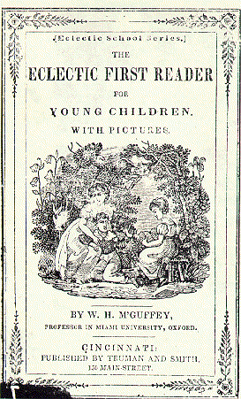

5.gets TomCopeland #
Tom Copeland is the administrator for RubyForge, which opened in July 2003 and now hosts over 450 projects. Tom works at Rich Kilmer’s red-minded company InfoEther.
1. So, give us an idea. How much time do you put into RubyForge?
Hm. Maybe… half an hour a day of actual work. But I mull over it constantly. And occasionally things arise that take more time, like when we got the new hardware, and putting out the Wiki spam fires, and so forth.
2. RubyForge has been an incredible contribution to Ruby coders. You are so responsive and it’s great to have an admin who is directly involved with Ruby-Talk and all the various projects. What drives you to work on RubyForge? TELL US!! WHY ARE YOU SO BLASTED GOOD??
Thank you! :blushes:
I don’t know… it’s fun to work on RubyForge, because I see lots of new projects. For example, seeing Michael Neumann’s postgres-pr project come out was neat, because I was able to use it on RubyForge right away. Also, I get to chat with lots of Rubyists about various things, and most of the folks I talk with are much more savvy than I am, so I’m always learning lots about Ruby and system administration and what-have-you. Especially the what-have-you.
3. You’ve added so many excellent components: project wikis, RubyGems integration, BitTorrents. Are there any components of RubyForge that are bothersome? Anything you regret?
Let’s not dwell on the sad things… we must leave them in our wake. Instead, let us look ahead to a bright future, with Ruwiki replacing UseMod as the default Wiki, with Subversion support, and with RubyForge sitting on a 32 CPU Sun E10K behind a T3 pipe all purchased by my lottery winnings! Note: some future items may be more likely than others.
4. Will you find a random image on Google to share with us?
Love those McGuffey Readers: 
{kind=link}
5. Getting anything cool for Christmas?
A 12 passenger van to contain carry my ever-growing family to and fro.
Comments are closed for this entry.